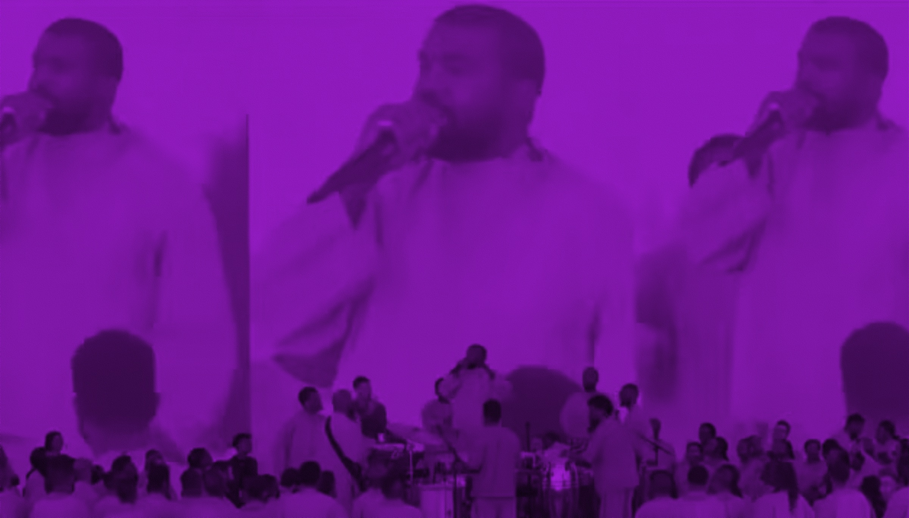
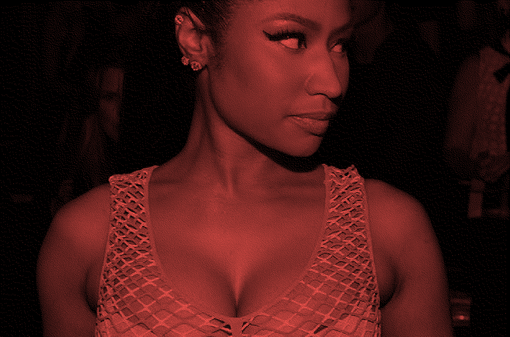

새로고침 refresh
검색 search
칸예 웨스트는 2020년 2월 2일 마이애미 다운타운의 베이프론트 파크에 위치한 야외 공연장(FPL 솔라 앰피시어터)에서 자신이 매주 진행해오던 "선데이 서비스(Sunday Service)" 행사를 열었다. 이날 공연 중 하나의 폭로성 발언을 남긴다.
"악마가 모든 프로듀서, 뮤지션, 디자이너를 데려갔어. ...... 전부
할리우드로 데리고 갔다가 뉴욕으로 끌고갔지. 황금 트로피를 쫓게
만든거야."
한편 올해 2월 3일, 그래미 어워즈 시상식의 사회를 보던 트레버 노아는 최근 도널드 트럼프 대통령을 공개 지지한 니키 미나즈를 언급하며 "니키 미나즈는 지금 여기 없다. 아직도 백악관에서 도널드
트럼프와 아주 중요한 사안을 논의 중이다"라고 농담했다.
이에 니키 미나즈는 몇 개의 트윗을 게시한다.
"네가 그렇게 좋아하는 아티스트는, 사탄 숭배 집단에서 의식을 치르느라
다른 나라에서 아기들을 데려와서, 그 애들을 훼손하고 죽이면서 자기들이
섬기는 신에게 바치는 피의 제물로 쓰고 있어. 네 주인이 사탄이면, 피를
계속 흘릴 수밖에 없는거야. 하지만 이제 쇼는 끝났어."
"오늘 밤 그들이 의식을 치르는 동안, 전능하신 하느님이 그들 앞에 스스로를
드러내실 거야. 그 의식은 자기들한테 역풍으로 돌아올 거야."
선데이 서비스(Sunday Service)는 칸예 웨스트가 2019년 1월 6일부터 매주
일요일마다 열었던 비공개 음악 예배 모임으로, 가스펠 성가대 "더
샘플스(The Samples)"가 팝·힙합·R&B 히트곡을 가스펠 편곡으로 재해석해
부르는 형식이었다. 처음에는 캘리포니아 칼라바사스 자택 등에서 초청과
비밀유지계약(NDA) 하에 소규모로 열렸으나, 이후 코첼라 공연(2019) 등을
거치며 대중적으로 확대되었고, 이 활동은 그의 가스펠 앨범 <Jesus Is
King>(2019년 10월 발매)으로 이어졌다. 인용된 발언은 2020년 2월 2일
슈퍼볼 LIV 개최 당일, 마이애미 베이프론트 파크의 FPL 솔라
앰피시어터에서 현지 교회 보스 처치(Vous Church)의 릭 윌커슨 목사와
함께 연 선데이 서비스에서 나온 것이다. 이 시기 칸예는 콜비
브라이언트의 갑작스러운 사망(2020년 1월 26일) 직후 그를 추모하는
자리를 갖는 등 신앙을 중심에 둔 활동을 이어가고 있었으며, 연예산업
계약에서 "예수"라는 단어 언급이 제한되는 관행을 공개적으로 비판하는
발언을 자주 하던 시점이었다.
제68회 그래미 어워즈는 로스앤젤레스 크립토닷컴 아레나에서 열렸으며,
트레버 노아가 통산 여섯 번째이자 "마지막"이라고 밝히며 진행을 맡았다.
니키 미나즈는 당시 몇 달간 트럼프 대통령에 대한 지지를 공개적으로
표명해왔는데, 백악관에서 열린 아동 투자계좌 관련 행사에 참석해
스스로를 트럼프의 "1호 팬"이라 칭했고, 케네디센터에서 열린 다큐멘터리
«멜라니아» 시사회에 참석했으며, 나이지리아 기독교인 박해 문제로 유엔
대사 마이크 월츠와 면담하는 등 이른바 '마가(MAGA)' 행보를 이어가고
있었다. 이런 배경에서 미나즈가 그래미 시상식에 불참하자, 트레버 노아는
오프닝 모놀로그에서 "니키 미나즈는 지금 여기 없다. 그녀는 아직도
백악관에서 도널드 트럼프와 아주 중요한 사안을 논의 중이다(Nicki Minaj
is not here. She is still at the White House with Donald Trump
discussing very important issues)"라고 농담한 뒤 트럼프 성대모사까지
곁들였다.
"As they do their ritual tonight, God almighty will reveal himself to
them. The ritual will backfire on them. God will not be mocked. Blessed
is the MIGHTY NAME OF JESUS CHRIST. Every tongue that rises up against
me in judgement shall be condemned & put to shame. Watch"
"The devil took all the producers, the musicians, the designers ......
moved all out to hollywood, moved us all out to New York chasing gold
statue.."
"Your favorite artist has been practicing rituals in a satanic cult
where they take babies from other countries & mutilate & kill them as
a form of a blood sacrifice to their God. You see, when your master is
satan, you must constantly shed blood. However, the JIG IS UP."


